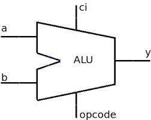
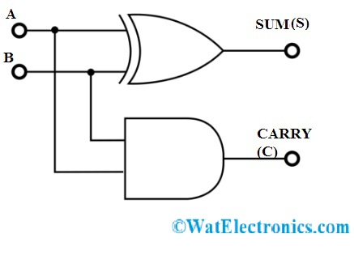
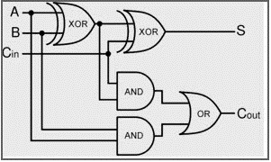

Introducción

Los circuitos sumadores son componentes fundamentales dentro
de la electrónica digital. Su función principal es realizar operaciones
de suma entre números binarios, que es el sistema numérico utilizado por
computadoras y sistemas digitales.
Estos circuitos forman parte de la Unidad Aritmético Lógica (ALU), la cual
es el núcleo de procesamiento en dispositivos electrónicos como computadoras,
calculadoras y microcontroladores.
Sistema Binario
El sistema binario utiliza únicamente dos dígitos: 0 y 1. A diferencia del sistema decimal, donde se usan 10 dígitos, en binario todas las operaciones se simplifican a combinaciones de estos dos valores.
Reglas básicas de la suma binaria
| 0 + 0 | = | 0 |
| 0 + 1 | = | 1 |
| 1 + 0 | = | 1 |
| 1 + 1 | = | 10 (carry) |
Concepto de Acarreo (Carry)
El acarreo es un bit adicional que se genera cuando la suma de dos bits excede el valor máximo representable en un solo bit.
1 + 1 = 10
- 0 → resultado (suma)
- 1 → acarreo
Este concepto es clave para entender los sumadores de varios bits.
Semisumador (Half Adder)

El semisumador es el circuito más básico para realizar una suma binaria.
Entradas
- A
- B
Salidas
- S (Suma)
- Cs (Acarreo)
Ecuaciones
S = A ⊕ B
Cs = A · B
Funcionamiento: No considera acarreo de entrada, por lo que su uso es limitado.
Aplicación: Bloque básico para sumadores más complejos.
Sumador Completo (Full Adder)

El sumador completo incluye un tercer bit de entrada llamado acarreo de entrada (Ce).
Entradas
- A
- B
- Ce (acarreo de entrada)
Salidas
- S (Suma)
- Cs (acarreo de salida)
Ecuaciones
S = A ⊕ B ⊕ Ce
Cs = (A·B) + (A·Ce) + (B·Ce)
Sumador en Paralelo (n bits)

Para sumar números de varios bits, se conectan varios sumadores completos en serie.
Ejemplo: sumador de 4 bits
- 1 semisumador
- 3 sumadores completos
Ventajas y Desventajas
Ventajas
- Operaciones aritméticas rápidas
- Esenciales en sistemas digitales
- Implementables en hardware programable
- Escalables a más bits
Desventajas
- El acarreo puede generar retrasos (delay)
- Propagación del acarreo afecta velocidad
- Mayor cantidad de compuertas para más bits